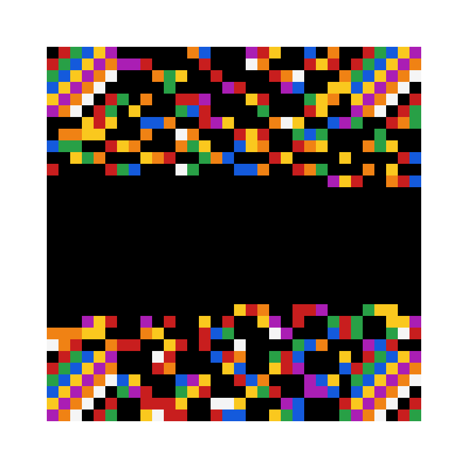

What is it?
CMBS is a colour QR-style code. Where a normal QR code stores bits in black and white squares, CMBS stores 3 bits per cell using an 8-colour palette - three times the data density in the same space.
- 32×32 grid, 8 colours, up to 272 bytes per code
- Reed–Solomon error correction (L / M / Q levels)
- Rotation-invariant - works upside down and sideways
- Camera scanning handles perspective and keystone angles
- Open-source Python: encode, decode, and a Tkinter GUI
Example

A CMBS code holding a small payload.
Scan online
Point your phone camera at a CMBS code right in the browser - no install needed. You can also upload a photo of a code.
Open the scannerDownload
Requires Python 3.10+ and a webcam (optional) for
camera scanning. Install dependencies with
pip install -r requirements.txt.
Unzip and run python gui.py for the app, or
python cli.py --help for the command line.